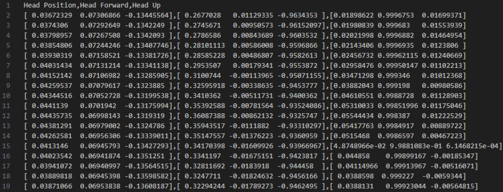

# EECS 221 Project
# Team members
Group 4 Members: Mengting Yang, Tianzhou Gao, Xuzhong Chen, Ang Li
# Abstract
In the evolving landscape of mixed reality (MR), ensuring user security and ease of access remains a significant challenge. Traditional authentication methods, like usernames and passwords, are cumbersome and less secure when applied to MR environments such as those encountered with Microsoft HoloLens. Furthermore, the HoloLens design does not support user-facing cameras, rendering facial recognition technologies infeasible for user identification. This limitation necessitates an innovative approach to authenticate users efficiently without compromising their privacy. Moreover, the standard practice of processing data on external devices introduces additional vulnerabilities, exposing users to potential security breaches. Our goal is to revolutionize user identification by developing a seamless, real-time authentication process that operates entirely on-device, eliminating the need for external data transmission and reducing the risk of privacy violations. Explore our solution to navigate the intersection of security and functionality, ensuring a secure and user-friendly experience in mixed reality environments.
# Problem Definition
- Inefficient Login Mechanisms: Traditional login systems like usernames and passwords are impractical and insecure for mixed reality platforms.
- Biometric Authentication Limitations: The design constraints of the HoloLens, which lack forward-facing cameras, rule out facial recognition for verifying user identity.
- Vulnerability to Data Theft: Sending data to external systems for processing exposes users to increased risks of unauthorized access and data theft.
- Integration Challenges: There is an essential need for an authentication system that integrates directly with the device, operates in real time, and maintains user privacy without external data transfers.
# Challenges and Approaches
# Challenges
- Resource Limitations: The HoloLens is a resource-constrained device, making it challenging to run complex machine learning models for real-time authentication.
- Privacy Concerns: Ensuring that user data remains private and is not exposed during the authentication process requires innovative solutions that avoid external data transmissions.
- Usability: Maintaining a seamless and user-friendly authentication experience in a mixed reality environment without interrupting user interaction.
- Accuracy: Developing a reliable authentication system that accurately identifies users based on limited and non-traditional biometric data like hand gestures and eye movements.
# Approaches
- Efficient Machine Learning Models: Exploring and implementing lightweight machine learning algorithms such as Random Forest, KNN, SVM, and XGBoost that can operate effectively on the HoloLens.
- On-device Processing: All authentication processes are conducted locally on the HoloLens to avoid the need for external data transfers, enhancing privacy and security.
- Background Authentication: Utilizing sensors to collect data unobtrusively in the background during regular user interactions with the MR environment, ensuring the authentication process is non-invasive.
- Data Optimization: Adjusting the sample rates and data collection methods to balance between authentication accuracy and system performance, minimizing the impact on device resources and user experience.
# Timeline:
| Week | Activity |
|---|---|
| Week 6 | Completion of Unity game design and commencement of data collection, followed by the midterm presentation. |
| Week 7 | Continued data collection and analysis. Focus on machine learning model training and iterative optimization based on evaluation results. |
| Week 8 | Comparative performance analysis of different machine learning algorithms to select the optimal one for deployment. |
| Week 9 | Deployment of the selected machine learning model on HoloLens for real-time analysis. |
| Week 10 | Comprehensive system testing, debugging, and revision of designs as needed to refine the application. |
| Final Week | Final presentation and submission, wrapping up the project documentation and outcomes. |
# Preliminary Design
The preliminary design of our project encompasses a comprehensive setup of hardware and software components, specifically tailored to enhance user authentication in mixed reality environments using the Microsoft HoloLens 2. Below is a detailed breakdown of the systems and methodologies involved:
# Hardware
- Microsoft HoloLens 2: Chosen for its advanced mixed reality capabilities and sensor array. This headset is integral to our solution, providing the necessary hardware platform for deploying our authentication algorithms.
# Software Components
- Unity Engine: Employed to create a dynamic and interactive mixed reality environment where users can engage with virtual objects. Unity is pivotal for simulating real-world scenarios in which user identification needs to be tested and validated. Below is a demo video showing how our Unity game works:
 (opens new window)
(opens new window) - Microsoft Mixed Reality Toolkit (MRTK): A collection of scripts and components intended to accelerate the development of mixed reality applications. MRTK is utilized to streamline interactions and simplify the usage of device features like spatial awareness and hand tracking.
- HoloLens 2 Sensor Streaming (hl2ss): This component is crucial for accessing real-time sensor data from the HoloLens 2. It enables the capture of detailed biometric data, which is essential for our machine learning models to perform user identification. The example data is shown in the picture below:

# Machine Learning Libraries
- XGBoost: Selected for its performance in classification problems, particularly under constraints of computational resources, which is a common challenge in wearable technology.
- SVM (Support Vector Machine): Used for its effectiveness in high-dimensional spaces, which is typical for sensor data from HoloLens 2.
- Random Forest: Chosen for its robustness in handling various types of data and its ability to run efficiently on limited datasets.
- KNN (K-Nearest Neighbors): Utilized for its simplicity and effectiveness in classification by comparing new data points with known data points.
# Unity Game Design
A simple Unity MR game is designed for simulating user activity in general MR applications. A demo video is presented below:
# Data Collection Strategy
During interactions within the Unity-developed MR environment, data is captured passively from the user, focusing on non-intrusive metrics to ensure comfort and natural behavior:
- Hand Joint Data: Tracks the position and orientation of each joint in the user’s hands, providing a detailed profile of hand movements.
- Eye Gaze Data: Monitors where the user is looking within the virtual environment, offering insights into user focus and intent.
- Hand Pose Data: Collects comprehensive data on the positioning and movement of the user’s hands, which is pivotal for gestures recognition.
# Data Storage and Processing
- CSV Files: Sensor data, including positions and orientations, is logged into CSV files. This format facilitates easy manipulation and analysis, serving as the foundational dataset for training our machine learning models.
- Local Processing: All data is processed on the device to ensure privacy and security, aligning with our goal to create a self-contained system that does not rely on external data processing.
This preliminary design is aimed at establishing a robust foundation for developing a secure and efficient user authentication system within mixed reality applications, addressing both technical and user-experience challenges.
# References:
# Articles
- Cong Shi, Xiangyu Xu, Tianfang Zhang, Payton Walker, Yi Wu, Jian Liu, Nitesh Saxena, Yingying Chen, and Jiadi Yu. 2021. Face-Mic: inferring live speech and speaker identity via subtle facial dynamics captured by AR/VR motion sensors. In Proceedings of the 27th Annual International Conference on Mobile Computing and Networking (MobiCom '21). Association for Computing Machinery, New York, NY, USA, 478–490. https://doi.org/10.1145/3447993.3483272
- Jarin, I., Duan, Y., Trimananda, R., Cui, H., Elmalaki, S., & Markopoulou, A. (2023). BehaVR: User Identification Based on VR Sensor Data. arXiv preprint arXiv:2308.07304.
- Miller, M. R., Herrera, F., Jun, H., Landay, J. A., & Bailenson, J. N. (2020). Personal identifiability of user tracking data during observation of 360-degree VR video. Scientific Reports, 10(1), 17404.
- Vijayan, V.; Connolly, J.P.; Condell, J.; McKelvey, N.; Gardiner, P. Review of Wearable Devices and Data Collection Considerations for Connected Health. Sensors 2021, 21, 5589. https://doi.org/10.3390/s21165589
# SDK and Libraries
- Windows Runtime API: JointPose Struct https://learn.microsoft.com/en-us/uwp/api/windows.perception.people.jointpose?view=winrt-22621
- MRTK: Extended eye tracking in native engine https://learn.microsoft.com/en-us/uwp/api/windows.perception.people.jointpose?view=winrt-22621
- hl2ss: https://github.com/jdibenes/hl2ss